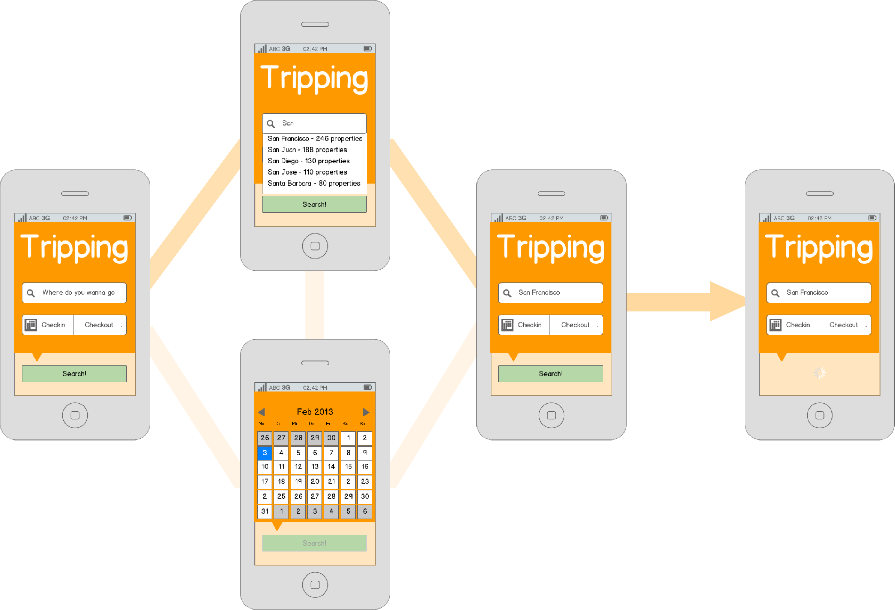
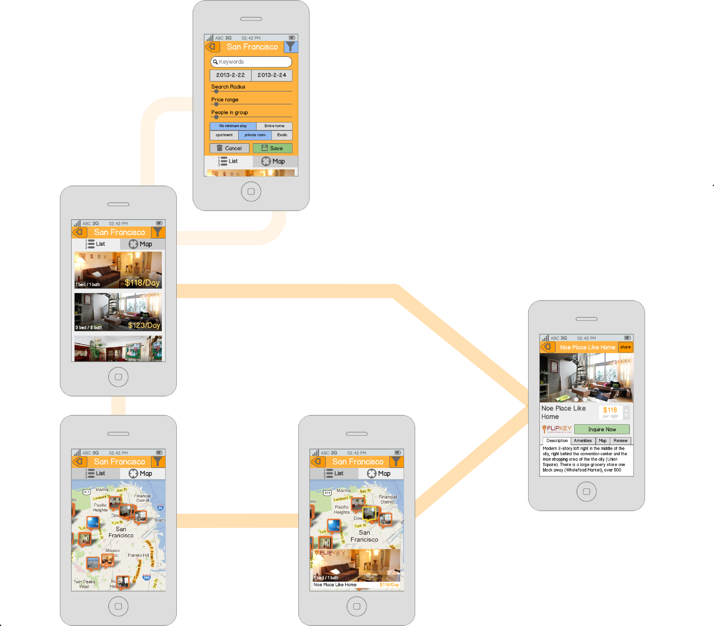
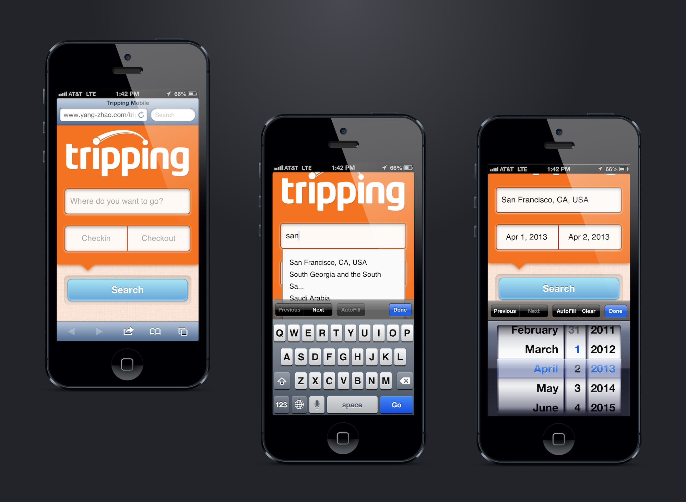
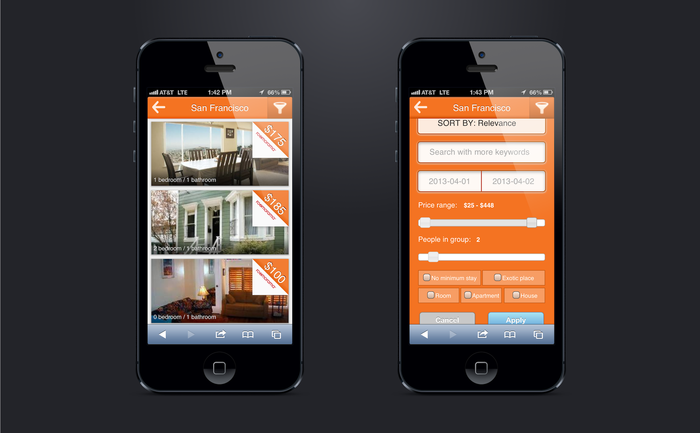
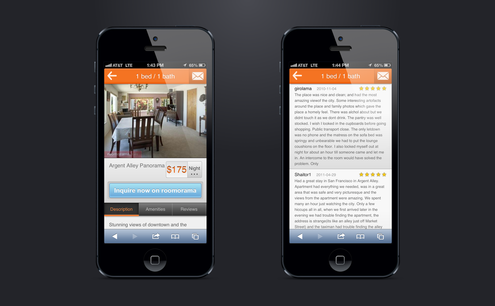

Starting with user research, I had my wireframe done in the first week.


In the following two weeks, I conducted usability testings and worked out the interfaces. In the process we decided to temporarily remove the map feature in order to get it online as soon as possible.
The development was done in the last week, with the help of our CTO and web developer.


